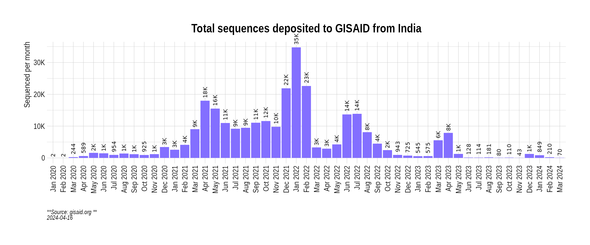

Get cases data
indian_state_cases <- GetIndiaConfirmedCasesMonthlyLong()
india_cases <- indian_state_cases %>% filter(State == "India")
head(india_cases)## MonthYear State value type
## 1 Mar 2020 India 1635 Confirmed
## 2 Apr 2020 India 33232 Confirmed
## 3 May 2020 India 155781 Confirmed
## 4 Jun 2020 India 395044 Confirmed
## 5 Jul 2020 India 1111273 Confirmed
## 6 Aug 2020 India 1990350 Confirmed
Read variant data from GISAID
gisaid_metadata <- ReadGISAIDMetada(path = "~/github/2021_Covid19_surveillance/data/all_metadata/metadata_tsv_2022_03_17.tar.xz")Plot total sequenced cases
gisaid_india <- FilterGISAIDIndia(gisaid_metadata_all = gisaid_metadata)
country_seq_stats <- TotalSequencesPerMonthCountrywise(gisaid_india, rename_country_as_state = TRUE)
p2 <- BarPlot(country_seq_stats, ylabel = "Sequenced per month", color = "slateblue1", label_si = TRUE)
p2
Overall, how much has India sequenced over months?
india_cases_long <- GetIndiaConfirmedCasesMonthlyLong() %>% filter(State == "India")
india_sequencing_proportion <- CombineSequencedCases(
cases_sequenced = country_seq_stats,
confirmed_long = india_cases_long
)
p3 <- BarPlot(india_sequencing_proportion, yaxis = "percent_sequenced_collected", ylabel = "% deposited to GISAID", color = "yellowgreen")
p3
We can combine all the three plots at once:
p1 / p2 / p3
Plot proportion of cases that been deposited from India
state_seq_stats <- TotalSequencesPerMonthStatewise(gisaid_india, drop_country = TRUE)
seq_stats <- rbind(country_seq_stats, state_seq_stats)
state_cases_long <- GetIndiaConfirmedCasesMonthlyLong()
india_sequencing_proportion <- CombineSequencedCases(
cases_sequenced = seq_stats,
confirmed_long = state_cases_long,
month.min = "Feb 2020",
month.max = "Feb 2022",
max.percent = 5
)
india_sequencing_proportion$State <- factor(
x = india_sequencing_proportion$State,
levels = as.character(GetIndianStates())
)
p4 <- PlotSequencedPropHeatmap(india_sequencing_proportion)
p4
Plot Prevalence
india_month_counts <- SummarizeVariantsMonthwise(gisaid_india)
india_month_counts$State <- "India"
india_month_prevalence <- CountsToPrevalence(india_month_counts)
vocs <- GetVOCs()
vocs[["omicron"]] <- NULL
custom_voc_mapping <- list(
`BA.1.1` = "Omicron-BA.1.1", `BA.1` = "Omicron-BA.1",
`BA.2` = "Omicron-BA.2"
)
india_month_prevalence <- CollapseLineageToVOCs(
variant_df = india_month_prevalence,
vocs = vocs,
custom_voc_mapping = custom_voc_mapping
)
p5 <- StackedBarPlotPrevalence(india_month_prevalence)
p5